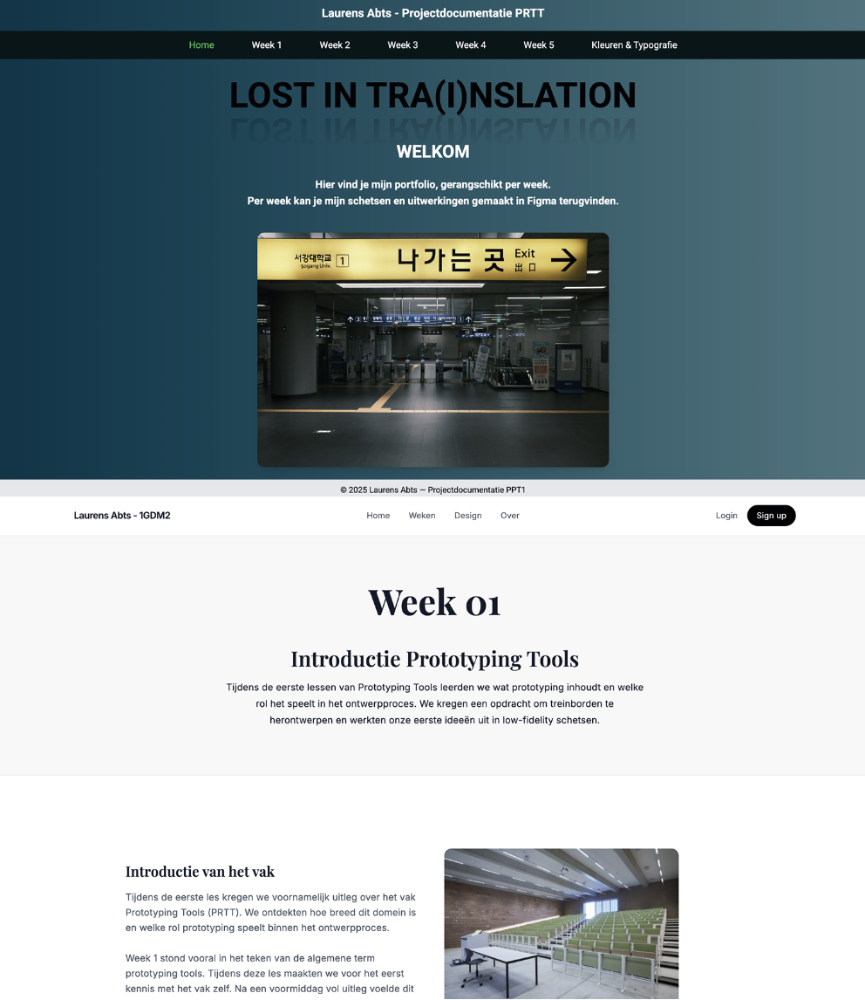

Treinschermen
Kleuren
Voor de treinschermen koos ik voor een combinatie van lichtgroen en donkerblauw (#4F9E49 & #02022A). Deze kleuren zorgen voor een sterk en duidelijk contrast, wat belangrijk is voor de leesbaarheid, zeker in een omgeving waar informatie snel moet worden opgepikt. Daarnaast is het contrast ook geschikt voor kleurenblinden, wat de toegankelijkheid van de schermen verhoogt. Beide kleuren werken bovendien goed samen met wit, waardoor teksten en iconen extra duidelijk blijven, zelfs vanop afstand.

Typografie
Als lettertype gebruikte ik Inter, een font dat bekendstaat om zijn goede leesbaarheid op digitale schermen. Aangezien treinschermen vaak snel gelezen worden en vanop verschillende afstanden, was een helder en eenvoudig lettertype hier essentieel. De lettergrootte varieert per scherm, afhankelijk van de inhoud en het belang van de informatie. Deze groottes liggen tussen 55 en 110, zodat de tekst duidelijk zichtbaar blijft in verschillende situaties.
Figma trein-app
Kleuren
Ook in de Figma trein-app werkte ik met hetzelfde groen-blauw contrast om visuele consistentie te behouden. Tijdens het ontwerpen merkte ik echter dat het oorspronkelijke donkerblauw te zwaar en te donker oogde op een kleiner scherm, zoals dat van een smartphone. Omdat ik een frissere en lichtere uitstraling wilde creëren, koos ik ervoor om het blauw een tint lichter te maken. • Groen: #4F9E49 • Blauw: #021E3C Deze aanpassing zorgt voor een aangenamere gebruikerservaring zonder het contrast en de herkenbaarheid te verliezen.

Typografie
Ook hier gebruikte ik Inter, omdat het lettertype zeer goed leesbaar blijft op kleinere schermen zoals smartphones. De lettergroottes liggen over het algemeen tussen 16 en 20, wat comfortabel lezen mogelijk maakt zonder het scherm te druk te maken. Zo blijft de interface overzichtelijk en gebruiksvriendelijk, zelfs bij langere interacties.
Website – designkeuzes
Voor deze website was het iets meer zoeken naar welke kleuren en lettertypes
het meest geschikt waren om een gebruiksvriendelijke en rustige omgeving te
creëren. Zoals te zien is bij mijn eerste versie, was de website aanvankelijk vrij
druk op vlak van kleurgebruik. Ik was toen vooral aan het experimenteren met gradients,
verschillende accentkleuren per element en opvallende combinaties. Hoewel dit interessant
was om te testen, zorgde het uiteindelijk voor een erg intensief scherm om naar te kijken.
Zeker wanneer hier ook afbeeldingen aan werden toegevoegd, werd het geheel snel chaotisch en visueel
vermoeiend. Door de vele kleuren en contrasten ging de focus verloren en werd het moeilijker
voor de gebruiker om de inhoud op een comfortabele manier te volgen. Daarom heb ik bewust gekozen
om volledig over te schakelen naar een soberder en rustiger design, met gebruiksvriendelijkheid
als belangrijkste uitgangspunt.
In de uiteindelijke versie werk ik voornamelijk met wit, verschillende
grijstinten en donkerblauw. Deze kleuren zorgen voor een neutrale en
overzichtelijke basis, waarbij de aandacht automatisch naar de inhoud wordt geleid.
De grijswaarden variëren subtiel per titel of per sectie, wat helpt om hiërarchie aan
te brengen zonder dat het ontwerp te druk wordt.


Kleurgebruik
De gekozen kleuren zijn bewust neutraal en goed leesbaar,
zowel op grote schermen als op kleinere toestellen.
Ze zorgen voor voldoende contrast en dragen bij aan een
professionele en toegankelijke uitstraling.
Functie Kleur
Primair donker #0B132B
Hoofdtekst #111827
Secundaire tekst #4B5563
Subtiel #6B7280
Lichtgrijze achtergrond #F9FAFB
Border #E5E7EB
Wit #FFFFFF
Deze combinatie maakt het mogelijk om duidelijke visuele
hiërarchie te creëren, zonder de gebruiker te overweldigen.
Lettertype
Ook bij de keuze van lettertypes stond leesbaarheid centraal.
Voor titels koos ik voor DM Serif Display, een serif-lettertype dat zorgt voor
een sterk visueel accent en een duidelijke scheiding tussen titels en lopende tekst.
Dit geeft de website wat meer karakter zonder afbreuk te doen aan de rust.
Voor de bodytekst en UI-elementen gebruikte ik Source Serif 4.
Dit lettertype leest vlot op schermen en voelt tegelijk professioneel en aangenaam aan.
Door slechts twee lettertypes te gebruiken, blijft het ontwerp consistent en overzichtelijk.

Bekijk ook de andere weken